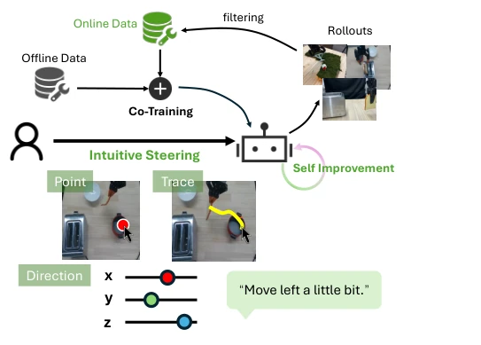
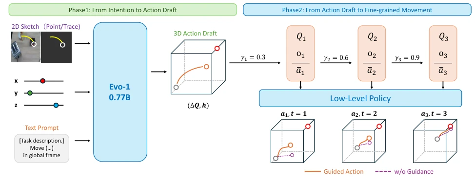
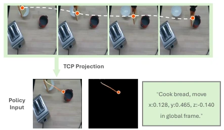
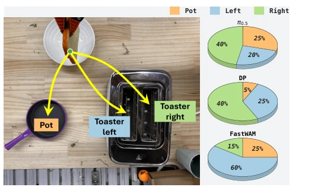
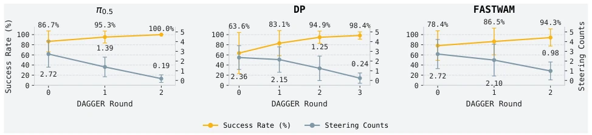
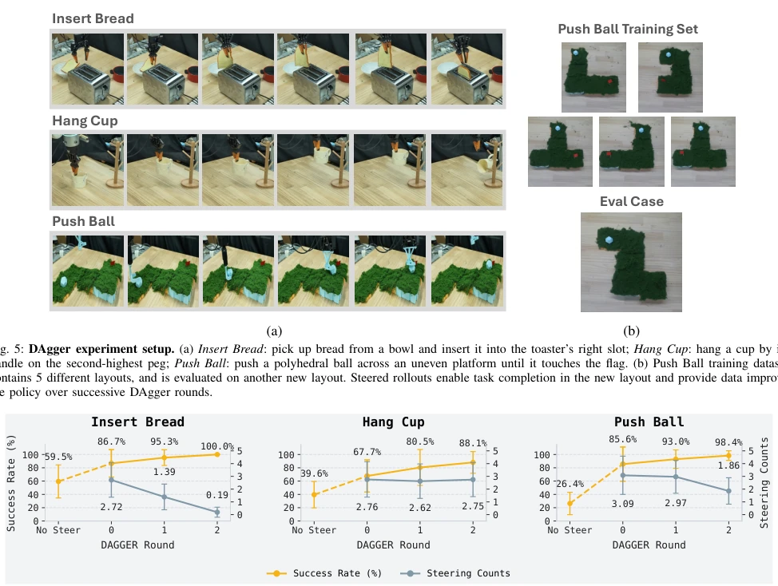
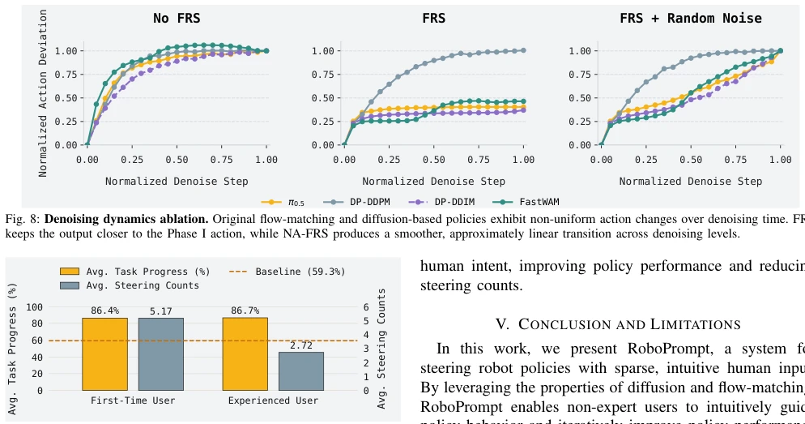
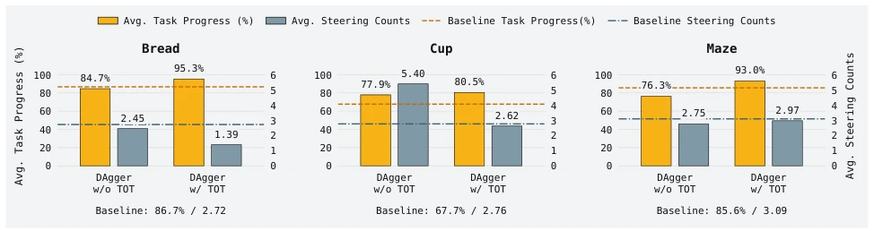

This paper offers a new solution to the "training" dilemma of embodied intelligence. RoboPrompt's core selling point is very attractive: without modifying the base model architecture or requiring specific fine-tuning, it enables robots to follow human instructions—even if it is drawing a circle or pointing in a direction. It cleverly translates human intent into action drafts, which are then "polished" through a dynamic denoising process of diffusion/flow matching. This is much lighter than "steerable policies" that require retraining strategies, after all, no one wants to start from scratch with a pre-trained model just to change an action path. However, do not get too excited too early; this method is currently mainly effective for end-effector pose control; dexterous hand operation? It is not its turn yet for now. Moreover, relying on the characteristics of diffusion models, switching to a non-generative strategy might cause it to fail. Overall, it is a practical "patch", but there is still a distance from true general intelligence, after all, drawing a circle enabling the robot to perfectly avoid obstacles, this magic is still a bit "metaphysical".
Although end-to-end imitation learning strategies have strong generalization, they are limited by the scarcity of real interaction data, leading to difficulties in zero-shot deployment [9]. Existing shared autonomy methods rely on teleoperation, with high hardware thresholds and requiring operator training [20]. And guidance based on language prompts often lacks fine-grained control [15], [17]. Existing policy guidance methods (such as Steerable Policies [21] or Inference-Time Policy Steering [25]) usually require fine-tuning or architecture modification of the policy, limiting cross-policy reusability. RoboPrompt aims to solve this contradiction: providing an intuitive guidance interface that can be implemented without modifying the base model or requiring specific training. It attempts to correct policy behavior through sparse human input (such as hand-drawn trajectories, target points), while collecting correction data for online policy improvement (DAgger), thereby breaking the vicious cycle of "scarcity of data leads to difficult deployment, difficult deployment leads to less data".

Fig. 1: Overview of RoboPrompt. RoboPrompt aims to enable human-in- the-loop deployment of robot policies, collecting failure-recovery rollout data that can drive continual policy improvement. It supports intuitive multimodal steering through inputs, including points, traces, and coarse directional instructions. These human-guided rollouts are collected and combined with offline data for co-training, forming a closed-loop framework for task completion and self-improvement without teleoperation.
RoboPrompt adopts a two-stage architecture, decoupling human intent translation and policy execution. The first stage (Action Drafting) utilizes a lightweight VLA model Evo-1 [23] to convert points, trajectories, or rough direction instructions into spatiotemporally continuous action blocks (Action Draft). The model is trained through a specific prompt label generation process to ensure the generated actions comply with physical plausibility. The second stage (Refinement) utilizes the denoising characteristics of base policies (such as Diffusion Policy [14] or π0.5 [1]). The core innovation is Progressive Biased Denoising (PBD), which smoothly transitions control weights from human intent to policy priors by gradually increasing the denoising level γ. To solve the non-uniformity of denoising dynamics, Noise-Augmented Flow Reversal Steering (NA-FRS) is introduced, combining flow reversal with random noise to achieve more linear action transitions. Finally, high-quality guidance trajectories are selected through Time-weighted Optimal Transport (TOT), mixed with offline data for DAgger training to achieve online self-evolution of the policy.

Fig. 2: System Architecture. RoboPrompt incorporates human intention into policy inference through two phases. In Phase I, prompt inputs are processed by a lightweight VLA to produce a temporally continuous 6D action chunk as an action draft. In Phase II, the base policy refines the action draft generated by Phase I. The fraction of noise-adding steps, γ, controls the balance between human guidance and the base policy. γ increases with successive replanning steps, gradually shifting control toward the base policy.

Fig. 3: Prompt label generation. Over the next n frames, connected TCP projections and the final TCP projection provide ground truth for trajectory and point prompts; summed and normalized actions supervise the global action prompt.
Experiments were conducted on the Flexiv Rizon4 robot, comparing three strategies: Diffusion Policy, π0.5, and FastWAM. In tasks such as Insert Bread, after introducing RoboPrompt, π0.5's success rate increased by 15.5%, and the number of human interventions decreased by 44%. In terms of guidance quality, the Prompt Alignment rate exceeded 95% on all three strategies. DAgger iterations show that after 2-3 rounds of training, policy autonomy significantly improved. Ablation experiments show that NA-FRS is smoother than simple denoising, and TOT filtering can reduce motion jitter and improve training data quality. The first user test also proved its ease of use, with novice performance close to experts.

Fig. 4: Steering experiment setup and natural policy distribution. In the steering experiment, the robot picks up bread from the bowl and places it into one of three targets (pot, left toaster, right toaster). The training set contains 46 demonstrations per target, all using the same text description across the three targets. The right panel shows the natural distribution of the three base policies over the three targets before steering.

Fig. 7: DAgger performance after replacing the low-level policy. Round 0 denotes the original base policy. With additional DAgger iterations, task progress increases while the average steering counts decrease across DP, π0.5, and FastWAM.
其他图片Other Figures

Fig. 6: Main DAgger results with π0.5 across three real-world tasks. Round 0 denotes the original policy before DAgger fine-tuning. Across the Insert Bread, Hang Cup, and Push Ball tasks, iterative training with RoboPrompt-guided corrections improves success rate, while the required steering counts are reduced or remain comparable.

Fig. 9: Task progress and steering counts for first-time and experienced users on bread insertion, using the same policy checkpoint and environment. In baseline, the policy executes autonomously without human steering.

Fig. 10: Policy improvement with filtered (w/ TOT) and unfiltered (w/o TOT) rollout data. Each setting uses 20 successful trajectories for one DAgger round. Baselines show task progress and average steering counts before training.